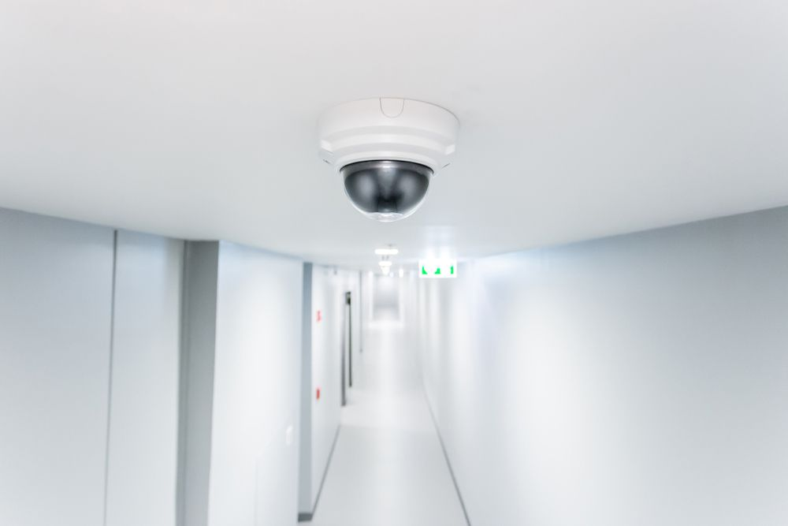

Get A Free Quote Now!
Thank you for contacting SPL Security Solutions.
We will be in touch soon.
Safeguarding Your Home, Vehicle & Business
In the heart of Surfers Paradise, security isn't just about locks and alarms—it's about ensuring peace of mind for homeowners and businesses alike. At SPL Security Solutions, we understand the unique security challenges faced by this vibrant community. From high-rise apartments and luxury hotels to bustling retail spaces and residential areas, our comprehensive locksmith services are designed to offer protection where it's needed most.
Our team, armed with cutting-edge technology and years of expertise, provides a range of services tailored to the Surfers Paradise lifestyle. Whether it's state-of-the-art access control systems to monitor and restrict entry throughout your commercial premises, a sophisticated restricted key system for exclusive residencies or other reliable locksmith services to keep your property secure at all times, we've got every corner covered.
For more information on our comprehensive range of locksmith services on the Gold Coast, call (07) 5588 8111.
Homeowners in Surfers Paradise can enjoy peace of mind with our dedicated residential locksmith services. We provide professional installation, repair and rekeying of locks to bolster your home's security against potential threats. Our team also offers key duplication and rapid response emergency lockout services for those unexpected moments when you find yourself unable to enter your home.
We provide businesses in Surfers Paradise with commercial locksmith services to safeguard their properties from unauthorised access. Our team installs high-security locks, master key systems and access control systems to ensure only authorised personnel have access to specific areas of your premises. We also offer emergency assistance and security assessments for a comprehensive solution.
Our automotive locksmith services in Surfers Paradise are here to help when you're locked out of your car. Our team specialises in key replacement, key duplication and transponder key programming to get you back on the road quickly. We also offer ignition repair or replacement for those experiencing issues with malfunctioning keys. Our services are available 24/7 for emergency situations.
Restricted key systems offer enhanced security by ensuring keys cannot be duplicated without explicit authorisation, leveraging patented technology to prevent unauthorised access. These systems enable the creation of a hierarchical key structure, allowing specific keys access to designated areas. This heightened control and security measure provides invaluable peace of mind for safeguarding assets and sensitive spaces in Surfers Paradise.
Our safes in Surfers Paradise come with a range of security features including reinforced doors and walls, fire resistance and advanced locking mechanisms. We offer different sizes to meet the varying needs of our clients and can provide expert advice on which safe is best suited for their specific requirements. Our team also provides maintenance for safes to ensure they remain in useable condition and unlocking services when needed.
We offer a range of security systems in Surfers Paradise, designed to provide businesses and homeowners with maximum protection. Our solutions include CCTV cameras, alarm systems, access control and intercoms for comprehensive surveillance and identification of potential threats. With our expert advice, you can create a tailored system that meets your specific security requirements and budget.
In Surfers Paradise, we provide a range of lock hardware, from durable mechanical locks to cutting-edge smart options. Each lock is designed to meet the highest standards of security and functionality.
In Surfers Paradise, we supply premium door hardware, including robust hinges, modern handles and advanced closers. Our products are designed to add both security and style to your property.
From durable fire door hardware to sleek closers and stylish handles, our selection suits both contemporary and classic designs, ensuring practicality and aesthetic appeal in Surfers Paradise.
24/7 Emergency Locksmith Services
Surfers Paradise is a busy and bustling area, making it even more important to keep your property secure at all times. Our 24/7 mobile locksmith services are available throughout the area to help with any lock-related emergency. From lockouts to break-ins, our team will be there to assist you whenever you need us.
We understand the urgency of securing your property after an attempted break-in, which is why we offer emergency security assessments and repairs to ensure your home or business is safe and secure. Our team also provides key cutting services, so you can have spare keys on hand in case of future emergencies.

Contact Details
24/7 Emergency Locksmiths or Security Tech


Trading Hours
Retail Shop

Frequently Asked Questions
-
What is rekeying and how does it differ from changing a lock?
Rekeying involves altering the internal components of a lock to accept a new key, keeping the existing lock body in place. Changing a lock, however, replaces the entire lock unit. Rekeying is often a cost-effective method to ensure old keys no longer work without the need to replace the entire lock.
-
How often should I lubricate my locks, and what type of lubricant should I use?
You should lubricate your locks at least once a year to ensure smooth operation. Use a dry lubricant specifically designed for locks, as oil-based products can attract dust and dirt, leading to a buildup that can impair the lock's function.